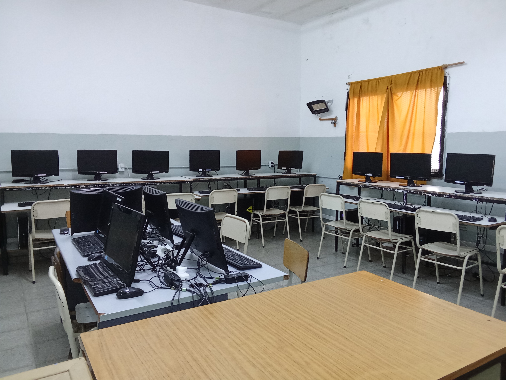
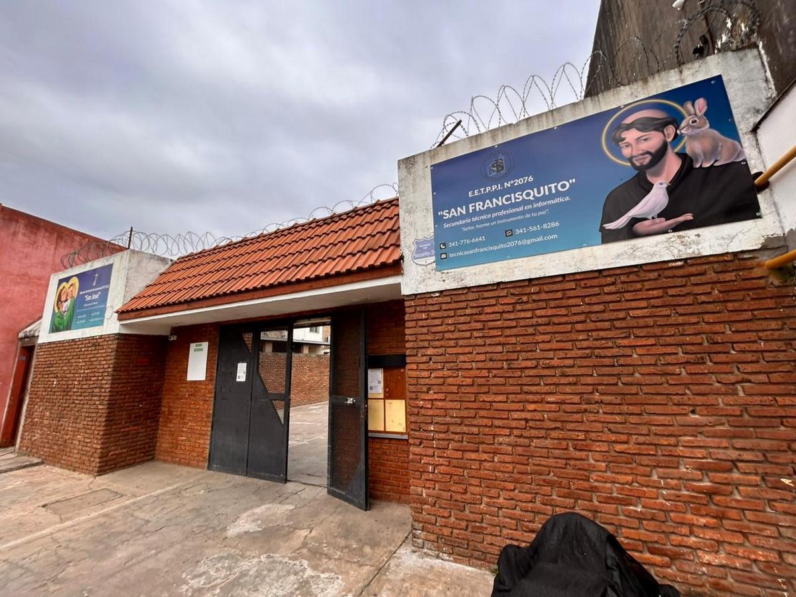

FORJANDO EL FUTURO A TRÁVES DE LA TECNOLOGÍA
En la secundaria San Francisquito entendemos que el futuro no se espera, se construye. Somos una institución educativa de gestión semiprivada con más de 16 años de trayectoria, dedicada a la formación de jóvenes profesionales en las áreas de la tecnología. Nuestro objetivo fundamental es brindar una educación integral que combine una rigurosa excelencia académica con una sólida formación práctica en talleres.
Creemos firmemente en el valor del "saber hacer". Por eso, nuestro modelo pedagógico transforma las aulas tradicionales en espacios de experimentación activa. Intentamos que los estudiantes no solo absorban conceptos teóricos, sino que los pongan a prueba diseñando prototipos, programando y resolviendo problemáticas reales del entorno socioproductivo actual. Preparemos a nuestros alumnos tanto para una inserción laboral inmediata y calificada, como para continuar con éxito sus estudios superiores.


FORMANDO LOS LÍDERES TECNOLÓGICOS DEL FUTURO
Elegir nuestra escuela técnica es apostar por una educación de vanguardia enfocada en el fascinante mundo de la Informática. Aquí, los estudiantes transforman su pasión por la tecnología en habilidades concretas como reparación de hardware y software, mantenimiento de redes, robótica, impresión 3D y más.
Entendemos que la educación técnica requiere práctica, creatividad y constancia. Por eso, invitamos a las familias y a los futuros estudiantes a explorar nuestro sitio web, recorrer de manera presencial nuestras instalaciones y descubrir los proyectos anuales en nuestra tradicional "Muestra de talentos". Sumarse a nuestra comunidad educativa es integrarse a un entorno dinámico que impulsa el pensamiento computacional, el trabajo en equipo, la cultura del esfuerzo y el desarrollo tecnológico de nuestra región.